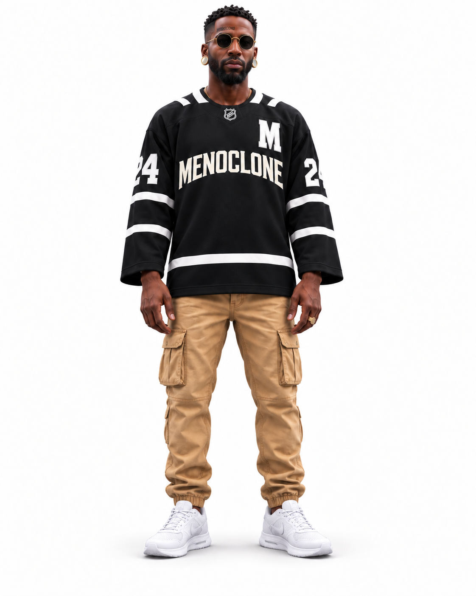
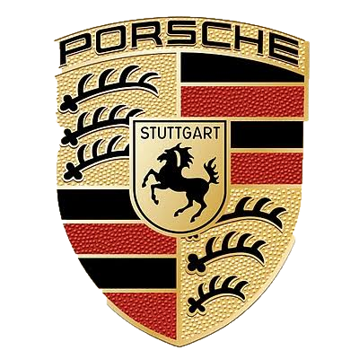

MENOCLONE MOTORSPORTS / ODOTNYC / CONCEPT 001
THE PANAMERA
MANIFESTO.
Some dreams don't arrive overnight. You study the machine, respect the journey, and put your own signature on the finish.

2011 Porsche Panamera · MENOCLONE Motorsports conceptCreative direction by OdotNYC
01 / A note from Odot
DIFFERENT
BY DESIGN.
See, everybody knows the 911. That's a classic. No debate. But the Panamera? That one always spoke to me different. Long roofline. Four doors. A shape that doesn't ask permission to be in the room.
It's Porsche DNA with a whole different rhythm. Smooth like a jazz record after midnight. You can appreciate the legend and still choose your own lane. That's what this car means to me.
I'm not trying to erase what Porsche built. I'm trying to respect it, understand it, and add a little OdotNYC imagination to the story.

“The 911 is a legend. The Panamera is the one that made me stop, look twice, and picture my own future.”
— Creative voice of OdotNYC
02 / Respect the roots

THE CREST / DECODED02 / Respect the roots
EVERY MARK
HAS A MEANING.
Before I put my own signature on a Porsche, I wanted to understand the badge already sitting on the hood. That crest isn't just decoration. It's a whole hometown story, carried in color, shape, and history.
To me, that's real design: when the details stand for something long before anybody says a word.
From my point of view, Porsche has always been about building something with purpose. The story starts with an engineering office in Stuttgart, then turns into sports cars that keep pushing their own design language forward. I respect that kind of patience. You don't build a legacy in a weekend.
01 / The horseTHE CITY IN MOTION.
That rearing black horse comes from Stuttgart's city coat of arms. Stuttgart's name traces back to Stuotgarten—a stud farm, a place associated with breeding horses. The horse in the center is a salute to the city Porsche calls home.
02 / The antlersROOTED IN WÜRTTEMBERG.
The black antlers are a heraldic reference to Württemberg, the historic region around Stuttgart. Porsche brought the city's symbol and the region's heritage together in one crest.
03 / The colorsHERITAGE IN COLOR.
Gold and black echo the Stuttgart and Württemberg heraldic tradition; red and black appear in the Württemberg-inspired quartered sections. It's a striking combination, but it also tells you where the marque comes from.
Porsche crest / Visual study
THE HERITAGE PALETTE.
Digital approximations for this editorial, not official Porsche brand specifications.
The crest was introduced in 1952. The image is used here for an independent heritage commentary; MENOCLONE Motorsports is not affiliated with Porsche.
1931
The blueprint
Ferdinand Porsche opens his engineering office in Stuttgart.
1948
First chapter
The Porsche 356 “No. 1” Roadster marks the beginning of Porsche sports cars.
1963
The icon
The model that becomes the 911 is unveiled, shaping generations of design.
2009
New rhythm
The Panamera makes its world debut in Shanghai as a four-door Gran Turismo.
History sources: Porsche heritage ↗ · Panamera 2009 announcement ↗
Crest reference: Porsche official website ↗. Historical symbolism is presented as editorial interpretation.
04 / Learn before the build
UNDER THE HOOD.
BEHIND THE VISION.
It's one thing to admire a Porsche. It's another to understand what makes it move. I've taken time to study Porsche mechanics while connecting with experienced local dealers and people who know these cars. The goal isn't to act like I know it all. It's to keep asking better questions.
Maintenance, diagnostics, how the systems communicate, what ownership really asks of you — that's part of the work. Every conversation, every lesson, every bit of research brings the vision closer to something real.
This is a personal learning journal, not a claim of Porsche certification or an official dealership partnership.
Read the learning journal ↗Field notes / Focus areas
THE WORK IS THE REWARD.
Engine and cooling systems · electrical diagnostics · service intervals · suspension · brakes · ownership research · thoughtful customization.
Weekly entries will document what is learned, researched, and verified as the project progresses.